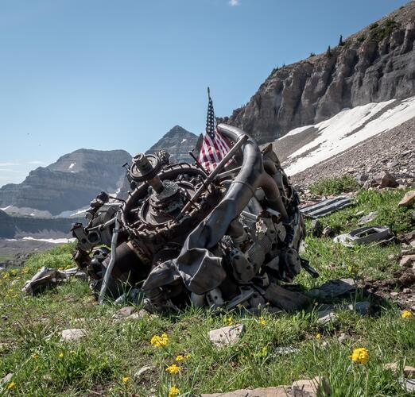

Mount Timpanogos is the second tallest mountain peak in the state of Utah, named after the Timpanogos tribe native to the area. It is a popular summer hike with a beautiful view and 2 different trails leading up to the top. The image above is a view of Mount Timpanogos from near the Timpanooke Trailhead. Between the two trails, the Timpanooke Trail is the most popular. Although the Aspen Grove Trail is shorter, it is steeper and more difficult. The Timpanooke Trail is longer but has a more gradual incline. The best time to hike Mount Timpanogos is in the summer between July and September after the snow has melted. A popular time of day to hike is early in the morning to avoid the heat of the day and often people will hike to the top to watch the sunrise. To do this, you will need to start hiking around 2:00 am and sleep is recommended before the hike.
One incredible site that can be visited on Mount Timpanogos is the B-25 Bomber crash site. On March 9, 1955, a B-25 Bomber crashed into the mountain. The plane was heading from Hill Air Force Base to Califorinia. The crash was caused by a combination of bad weather and pilot error and killed all 5 crew members on board. The crash is located about 2 miles from the summit of Mount Timpanogos. The site is a popular destination on the Timpanooke Trail and a historicaly remarkable place to visit. It is marked by a plaque and several pieces of the plane scattered along the mountain.
| Trail | Distance (One Way) | Time | Difficulty |
|---|---|---|---|
| Timpanooke Trail | 7.1 miles | 4-6 hours | Moderate |
| Timpanooke Trail & B25 Crash Site | 8.27 miles | 5-7 hours | Moderate |
| Aspen Grove Trail | 6.95 miles | 4-6 hours | Difficult |